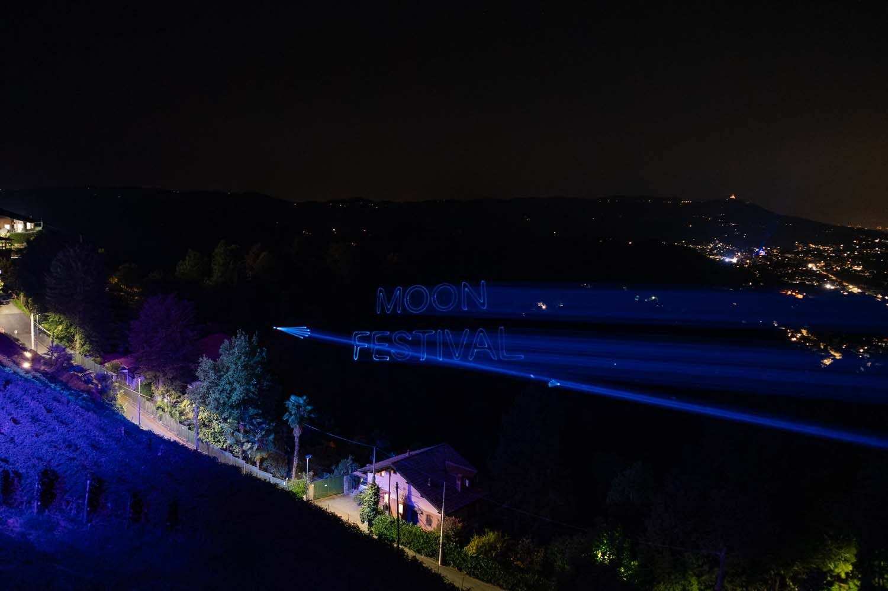
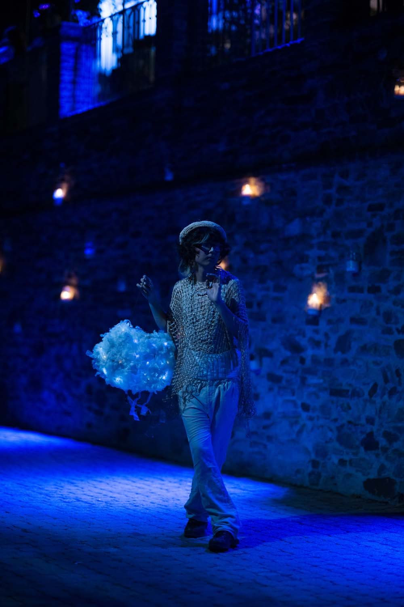
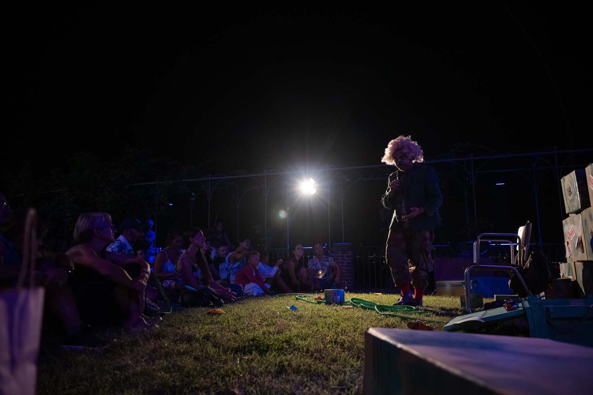
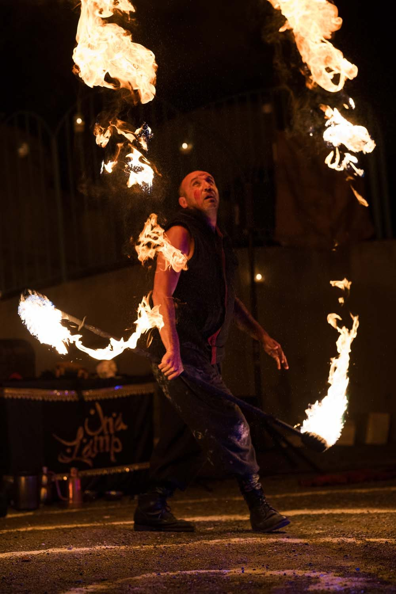
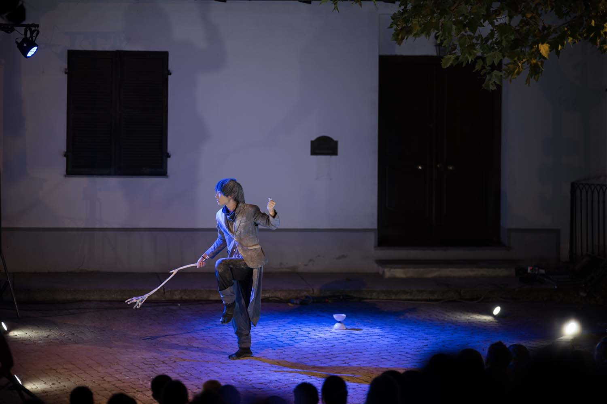
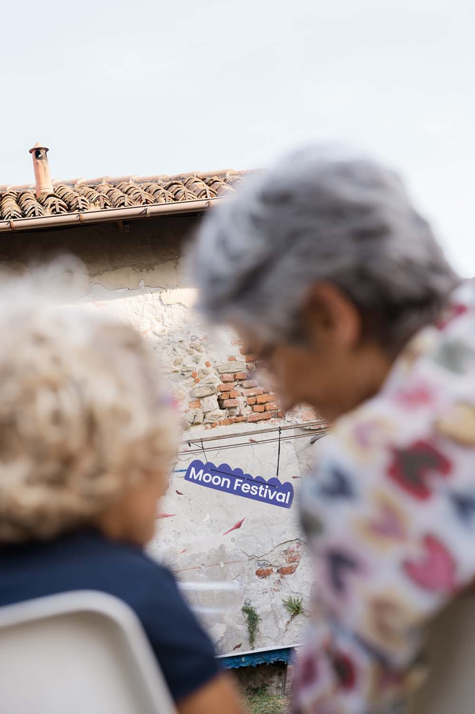

Cos’è il Moon Festival
Cos’è il Moon Festival
Gratuito, queer-friendly, accessibile, sostenibile e pieno di umanità.

© Ilum collettivo · Moon Festival, 5ª edizioneAttenzione
Questo non è un borgo. È un palcoscenico.
È un palcoscenico che ha smesso di fare finta di essere normale. Moon Festival è gratuito, queer-friendly, accessibile, sostenibile e pieno di umanità.
Che sembra una frase semplice, ma dentro ci sono anni di lavoro, persone che ci credono, materiali recuperati, riunioni improbabili, camminate, candele, allestimenti costruiti a mano e una certa ostinazione nel pensare che la cultura possa ancora essere un atto di cura.

© Ilum collettivo · Moon Festival, 5ª edizioneIl borgo
Una volta all’anno San Raffaele cambia funzione.
Le strade diventano percorsi, i cortili diventano scene, i balconi osservano, i muri ricevono luce, ombre, suoni e strane responsabilità poetiche.
Le piazze, che di solito fanno il loro onesto lavoro da piazze, iniziano a ospitare spettacoli, installazioni, musica, corpi in movimento e apparizioni artistiche difficili da archiviare sotto “normale amministrazione”.

© Ilum collettivo · Moon Festival, 5ª edizioneCome si vive
Non si entra. Si attraversa.
Il Moon Festival non è pensato per essere guardato da lontano, con le braccia conserte e l’espressione di chi sta valutando un preventivo. È un percorso diffuso, un piccolo ecosistema temporaneo in cui arte, natura e comunità si incontrano per creare qualcosa che non esisteva prima.
Qui si cammina, ci si perde, si segue una luce, si inciampa in una danza, ci si ferma davanti a un’installazione e si riparte senza essere del tutto sicur* di stare andando nella direzione giusta. Nella vita succede spesso. Qui almeno è previsto dal programma.

© Ilum collettivo · Moon Festival, 5ª edizioneI linguaggi
Manuale provvisorio per apparizioni improbabili
Il festival mescola arti performative, circo contemporaneo, teatro, danza, musica, marionette, teatro di figura, installazioni urbane, esperienze partecipative e tutto ciò che riesce a trasformare un luogo familiare in qualcosa di improvvisamente vivo.
Non cerchiamo solo spettacoli da mettere in fila. Cerchiamo linguaggi capaci di abitare il borgo, dialogare con chi lo attraversa, aprire immaginari e generare incontri. A volte fanno ridere. A volte fanno rallentare. A volte spostano qualcosa senza chiedere il permesso.

© Ilum collettivo · Moon Festival, 5ª edizionePrima del festival
Il festival comincia prima di sapere cosa sta facendo.
Il Moon Festival nasce molto prima dei giorni di apertura: mesi di lavoro condiviso, co-progettazione, ascolto, formazione, errori utili e tentativi che, contro ogni previsione ragionevole, iniziano a somigliare a un festival.
Ci sono artist*, volontar*, abitanti, bambin*, nonne, tecnic*, giovani in residenza, persone che montano cose e persone che dicono “secondo me era qui” davanti a un cavo scomparso nel nulla. Ognun* mette qualcosa. E proprio lì il Moon comincia davvero.

© Ilum collettivo · Moon Festival, 5ª edizioneAccoglienza
Nessun* dovrebbe sentirsi fuori posto in un luogo fatto per perdersi.
Moon Festival vuole essere uno spazio accogliente, accessibile e queer-friendly, attento alle differenze, alla parità di genere e alla qualità delle relazioni. Perché la partecipazione comincia da lì: dal potersi sentire liber* di esserci.
Costruiamo un festival aperto a persone di età, background, corpi, competenze, desideri e modi diversi di attraversare il mondo. Se non riesci a immaginarlo… vieni a viverlo.